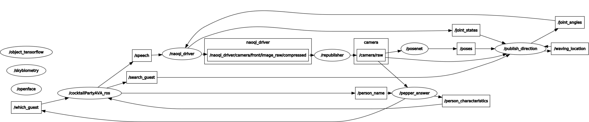

Robot Vision
Documentation of our insights
Face Recognition & Feature Detection
The goal of the robot vision group was to detect and recognize a person, as well as some descriptor features of the person. We used Pepper's front camera images and ROS-wrapped packages from TU/e Robotics for various tasks. The ROS-wrapped packages we used includes Openface for face recognition, Skybiometry for feature description, and PoseNet for detecting waving person (someone with a raised arm). In the end, we used in a single script which worked in conjunction with other groups for the Robocup Cocktail Party Task.
We managed to implement face detection, face recognition, autonomous learning of unknown faces, extraction of facial properties (age, gender, glasses) and the detection of a waving person in a room.
The image below shows the RQT Graph with the topics (rectangular) and nodes (round).
